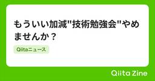

Qiita Zine
https://qiita.com/official-columns/
Dear Great Hackers
フィード

作って終わりにしない！ ＳＯＭＰＯで「データの民主化」をめざすチームが感じる仕事の醍醐味とは
Qiita Zine
構築したダッシュボードを現場で活用してもらうには、使う人のペルソナや業務内容、完成後の運用まで具体的に調べ、考える必要があります。数字を見て何を判断するのか、誰がデータを更新するのか、担当者が替わったらどう引き継ぐのか。 […]投稿 作って終わりにしない！ ＳＯＭＰＯで「データの民主化」をめざすチームが感じる仕事の醍醐味とは は Qiita Zine に最初に表示されました。
2日前

Qiitaニュース | もういい加減”技術勉強会”やめませんか？
Qiita Zine
2026/11/18に配信された Qiitaニュースのバックナンバーです。 Dear great hackers, こんにちは！いつもQiitaをご利用いただきありがとうございます。 先週いいねが多かった投稿ベスト20( […]投稿 Qiitaニュース | もういい加減”技術勉強会”やめませんか？ は Qiita Zine に最初に表示されました。
3日前

画面の前から動かない僕らのリアル ー 20万超えアーロンチェア、昼休み40分ジム、ラジオ体操【Qiitaエンジニア座談会】
Qiita Zine
「一日中画面に向かいっぱなしで、夕方には目がシパシパ……」「肩も腰もバキバキだけど、どうしたら良いか分からない」多くのエンジニアが抱える日常的な体の不調や健康管理の悩み。リモートワークの浸透によって自由な働き方が手に入っ […]投稿 画面の前から動かない僕らのリアル ー 20万超えアーロンチェア、昼休み40分ジム、ラジオ体操【Qiitaエンジニア座談会】 は Qiita Zine に最初に表示されました。
10日前
Qiitaニュース | AI「テスト通りました」← これ､本当？ Stryker でテストの穴を塞いだ話
Qiita Zine
2026/11/18に配信された Qiitaニュースのバックナンバーです。 Dear great hackers, こんにちは！いつもQiitaをご利用いただきありがとうございます。 先週いいねが多かった投稿ベスト20( […]投稿 Qiitaニュース | AI「テスト通りました」← これ､本当？ Stryker でテストの穴を塞いだ話 は Qiita Zine に最初に表示されました。
10日前
「中高生 Ruby プログラミングコンテスト 2026」の最終審査会開催のお知らせ
Qiita Zine
こんにちは！Qiita Zine編集部です。「中高生Rubyプログラミングコンテスト 2026」最終審査会の開催が決定いたしましたので、お知らせいたします。 「中高生Rubyプログラミングコンテスト」とは 「中高生Rub […]投稿 「中高生 Ruby プログラミングコンテスト 2026」の最終審査会開催のお知らせ は Qiita Zine に最初に表示されました。
10日前
Qiitaニュース | 新しいRAG「Decision RAG」は速い！安い！上手い！🍜
Qiita Zine
2026/11/11に配信された Qiitaニュースのバックナンバーです。 Dear great hackers, こんにちは！いつもQiitaをご利用いただきありがとうございます。 先週いいねが多かった投稿ベスト20( […]投稿 Qiitaニュース | 新しいRAG「Decision RAG」は速い！安い！上手い！🍜 は Qiita Zine に最初に表示されました。
17日前
「ビジネスに刺さったか」まで見届ける。ＳＯＭＰＯのアーキテクトが語る、技術と事業をつなぐ面白さ
Qiita Zine
自分たちが選んだ技術や設計は、現場でどのように役立っているのか。実際に使うユーザーの声を聞くことで、設計時には見えていなかった課題に気付くこともあります。そのような反応を次の改善に生かし、事業に役立つ仕組みを考えつづける […]投稿 「ビジネスに刺さったか」まで見届ける。ＳＯＭＰＯのアーキテクトが語る、技術と事業をつなぐ面白さ は Qiita Zine に最初に表示されました。
19日前
YouTubeの原点から「自己最適化する画像」へ。Imgixが描く未来
Qiita Zine
Webサイトを開いたのに、画像が重くてなかなか表示されない。2000年代前半のネットワーク環境ならばともかく、今の日本でそんなサイトがあったらどうでしょうか。ページを開く前にブラウザを閉じられ、誰にも見向きもされなくなっ […]投稿 YouTubeの原点から「自己最適化する画像」へ。Imgixが描く未来 は Qiita Zine に最初に表示されました。
19日前
AI駆動開発のボトルネックを解消する5ステップ｜TOC活用法【Qiita AI Summitレポート】
Qiita Zine
生成AIの進化により、コーディングやプルリクエスト作成の速度は飛躍的に向上しました。しかし、「実装は速くなったのに、なぜか全体のリリース速度が変わらない」という違和感を抱えるチームは少なくありません。AI駆動開発が浸透す […]投稿 AI駆動開発のボトルネックを解消する5ステップ｜TOC活用法【Qiita AI Summitレポート】 は Qiita Zine に最初に表示されました。
23日前
9割の組織が陥る「AI導入の罠」──トークン量ではなく“質”を測る、HireRooが語るAI協働力の高め方 Qiita AI Summit セッションレポート
Qiita Zine
2026年9月、エンジニアコミュニティ「Qiita」が主催するAIと開発組織をテーマにしたオフラインイベント「Qiita AI Summit」が開催されました。 GitHub CopilotやClaude Codeなどの […]投稿 9割の組織が陥る「AI導入の罠」──トークン量ではなく“質”を測る、HireRooが語るAI協働力の高め方 Qiita AI Summit セッションレポート は Qiita Zine に最初に表示されました。
24日前